The Complete User Guide
Everything you need to orchestrate your AI agents, manage tasks, and run your command center — written for humans, not engineers.
USER GUIDE V2 · PORTAL V2.4.2Welcome to Mission Control
Mission Control v2.4.2 is your command center for orchestrating AI agents, managing tasks, and accelerating everything you build — from a single chat with your AI to coordinating entire agent swarms. This is User Guide v2, refreshed for the current portal.
This guide walks you through every panel, control, and workflow in the portal. Whether you're logging in for the first time or exploring the deeper controls, you'll find a dedicated section for the top bar and for each tab in the left sidebar — grouped into Main, Work, Agents, Workspace, Knowledge, and Mods.
If you used an earlier version of the portal, most tabs work the same — but the sidebar is now organized into labelled groups, the top bar has grown (Dock Chat, a bigger context meter, a version/update panel, a bug-report button, and a third "Rose" theme), and a Mods area can host add-on panels such as System Status.
What's New in v2.4.2
The biggest changes since the previous guide (v2.2.92) are in the shell — the sidebar, the top bar, and the new Mods area — rather than in the individual tabs.
| Area | What Changed |
|---|---|
| Sidebar groups | Tabs are now grouped and collapsible: Main, Work, Agents, Workspace, Knowledge, and Mods. Group headers toggle open/closed. |
| Top bar | New Dock Chat button, a click-to-expand context (CTX) meter now scaled to the 1M-token window, an Online pill, a version/update panel with "Check for Updates", and a bug-report button. |
| Themes | Three quick theme buttons in the top bar: Dark, Light, and Rose. (This guide itself ships Dark + Light.) |
| Restart | A one-click Restart in the top bar starts a fresh AI session (with a confirm prompt). |
| Bookmarks bar | A thin bar under the top bar lets you pin your own shortcuts (internal tabs or external URLs) via the "+" button. |
| Mods (System Status) | A new Mods group can host add-on panels injected into the portal. System Status is the built-in example — portal health, connected services, and context usage. |
| Billing | The Billing/Payments tab is hidden by default on most accounts (it only appears when billing is enabled for you). |
PureBrain portals are per-customer. Some items (Billing, and Mods panels like System Status or a "Poke" button) are optional and only appear when they've been enabled or installed for your account. If you don't see a tab described here, it simply isn't turned on for you.
Quick Reference: Every Tab
A one-line summary of every sidebar tab, grouped the way the portal groups them. Each has its own detailed section later in this guide — use the sidebar to jump straight to any of them. The Top Bar is documented separately in The Top Bar & Global Controls.
| Group | Tab | One Line |
|---|---|---|
| Main | Let's Talk | Voice-first AI interface with microphone, visualizer, and ElevenLabs voice |
| Chat | Text conversation + Inbox + CC — your primary AI dialogue surface | |
| Terminal | Live terminal panes for agent / Claude Code sessions — parallel work at scale | |
| Constitution | 7-subtab governance: rules, compliance, memory, action log, overrides | |
| Work | Tasks | Structured work queue with Active / Pending / Completed / Failed tracking |
| My Deployments | All live deployments + My Mods — manage what your AI has shipped | |
| To Do | Human-in-the-loop approval queue — items your AI needs your sign-off on | |
| Agents | My AI Fleet | Active agents + BOOPs + AI Organogram — who's running and what they do |
| Agent Roster | Full agent directory with filters, batch actions, and agent detail cards | |
| Agent Hub | System health gauges + live agents + action buttons + Connected APIs | |
| Skills Shop | Browse and activate reusable agent capabilities | |
| Workspace | Files | File browser with tree nav, grid/list views, storage bar, and delivery system |
| Settings | Profile + Preferences — identity, API keys, notification & connection config | |
| Billing (hidden) | Subscription, billing history, plan upgrades — only shown when billing is enabled | |
| Earn | Refer & Earn | Referral link, live earnings stats, reward tiers, PayPal payout setup |
| Knowledge | Knowledge Hub | PureBrain Book, Brainiac Training, AI Partnership Framework, Ingest Training |
| Mods | System Status (add-on) | Portal health, connected services, and context usage — an installable Mods panel |
Glossary
A few PureBrain terms you'll meet throughout the portal and this guide:
| Term | What it means |
|---|---|
| BOOP | A recurring job your AI runs on a schedule (like a timer or alarm) — for example, a daily summary or an hourly check. You'll see your scheduled BOOPs in My AI Fleet → Active Boops. |
| CC (Claude Code) | Your AI writing and running code on a server. The CC subtab in Chat lets you watch that work live without leaving the portal. |
| Conductor | The lead AI that coordinates the others — it decides which specialist agent handles each piece of work, like a project manager for your AI team. |
| Context window | How much your AI can "hold in mind" at once during a session. When it fills up, older details may be summarized to make room — similar to short-term memory. |
| Organogram | An org chart for your AI — a visual map showing the conductor at the top and the specialist agents reporting under it. |
First Login
Your first login sets up your AI partnership. Here's exactly what to expect and how to get oriented quickly.
The Hub tab is your system health dashboard. Bookmark it or keep it open in a second window during your first sessions — it shows real-time agent activity and resource usage.
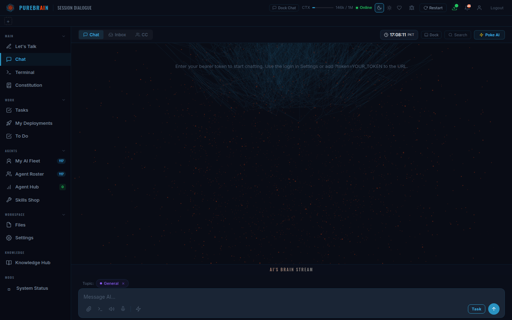
The Top Bar & Global Controls
The bar across the very top of Mission Control stays visible on every tab. It's your always-on cockpit — brand, status, session controls, and appearance — so it's worth a minute to learn what each control does.
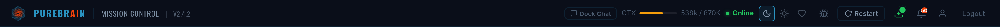
Left side: identity
The PureBrain logo and wordmark sit on the left, followed by Mission Control and the current portal version (v2.4.2). Clicking around never hides this — it's your anchor.
Right side: controls
| Control | What it does |
|---|---|
| Dock Chat | Docks the chat composer to the bottom of the screen so you can chat while viewing any other tab. Toggle with the button or Ctrl+Shift+D. |
| CTX meter | A live gauge of your AI's context-window usage (e.g. 146k / 1M tokens). Click it to open a detail popup. As it fills, older detail gets summarized; a Restart gives a fresh, full-capacity context. |
| Online pill | Green dot + "Online" means your AI session is live and reachable. If it turns amber/red, check the Hub or Restart. |
| Theme buttons | Three one-click themes: Dark (moon), Light (sun), and Rose (heart). Your choice is remembered. |
| Bug report | The bug icon opens a quick way to report a problem with the portal. |
| Restart | Starts a fresh Claude session for your AI (asks you to confirm first). Use it when context is nearly full or the AI seems stuck. It briefly disconnects the live session. |
| Version / Update | The download-style icon opens a Version Info panel showing your current version with a Check for Updates button and release notes. |
| Notifications | The bell opens your notifications list, with Clear all / Mark read. A badge shows unread count. |
| User / Logout | The person icon is your account; Logout clears your session and returns to the login screen. |
The Bookmarks bar
Just below the top bar is a thin Bookmarks bar. Click the + to pin a shortcut — either an Internal Tab (jump straight to Chat, Terminal, Files, Deployments, Settings, and more) or an External URL. Your pinned bookmarks stay one click away on every screen.
Restart is powerful but not free — it starts a brand-new AI session, so anything the AI was holding only in its working context is reset. Restart deliberately (e.g. when the CTX meter is near full), not reflexively. You'll always get a confirm prompt first.
First 5 Steps
The fastest path from first login to your first AI win. Do these five things in your first session and you'll be operating at full speed.
Spend exactly 10 minutes: 3 min in Chat (send a real task), 2 min in Let's Talk (try voice), 2 min in Constitution (read Global Rules), 2 min in Skills (browse categories), 1 min in Agents (see your fleet). You'll know the portal.
How to Talk to Your AI
Your AI responds to natural language — not commands, not code. But knowing a few patterns unlocks dramatically better results.
The Four Communication Modes
Prompt Patterns That Work
Your AI is most effective when your request specifies what, format, and context. Here are patterns to try:
The Most Important Habit
Treat your AI like a highly capable colleague, not a search engine. Don't ask questions — assign work. Instead of "What are good marketing strategies?" say "Create a 30-day marketing plan for [my product] targeting [audience] with a $5K budget."
The soul of PureBrain is in the dialogue. Send a request, review the output, then refine: "Good — now make the tone more direct" or "Add a section on risks." Iteration produces the best results. Your AI remembers context within a session.
Multi-AI Patterns
When a task is too large for one agent, use the Teams tab to launch a swarm. Common patterns:
| Pattern | When to Use | How |
|---|---|---|
| Parallel Research | Need multiple angles researched simultaneously | Teams → launch swarm, each agent covers one angle |
| Draft + Review | Quality-critical content | Agent 1 drafts, Agent 2 critiques, Agent 3 finalizes |
| Plan + Execute | Complex projects | Chat to plan, Teams to execute parallel workstreams |
| Overnight Runs | Long-running research or builds | Set up Tasks + BOOPs to run while you sleep |
Let's Talk
The voice-first entry point to your AI civilization. Let's Talk is a full Human-Machine Interface (HMI) for natural, spoken conversation with your AI — no keyboard required.
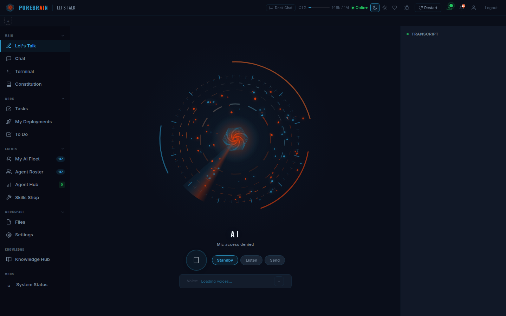
Voice Interface
The Let's Talk screen centers on a live audio visualizer — a canvas animation that responds to your microphone in real time. Around it:
| Control | What it does |
|---|---|
| Microphone button (🎤) | Toggle listening on/off. Click to start, click again to stop and send. |
| Standby / Listen / Send | Manual state controls. Standby = idle, Listen = active capture, Send = submit to AI. |
| Voice selector | Choose the voice your AI responds in. Browser TTS or ElevenLabs AI voice. |
| Engine toggle | Switch between Browser (free, instant) and ElevenLabs (premium, more natural). |
| Send word | Set a custom trigger word (e.g. "send it") to submit your voice input hands-free. |
| Transcript panel | Scrollable history of what was said and the AI's responses during the session. |
Tips & Tricks
Open Voice Settings (the ▾ arrow next to the voice selector) and set a Send word like "submit" or "done". Now you can dictate and submit entirely hands-free — perfect for on-the-go use.
Enable ElevenLabs engine (requires API key in Settings) for dramatically more natural AI speech. Ideal for long-form outputs like summaries and reports you want read aloud while multitasking.
The first time you use Let's Talk, your browser will ask for microphone permission. Click Allow. If you accidentally denied it, go to your browser's site settings for app.purebrain.ai and reset the permission.
Chat
The primary text conversation surface. Chat is where you assign work, review outputs, and hold ongoing dialogue with your AI partner. It has three subtabs: Chat, Inbox, and CC.
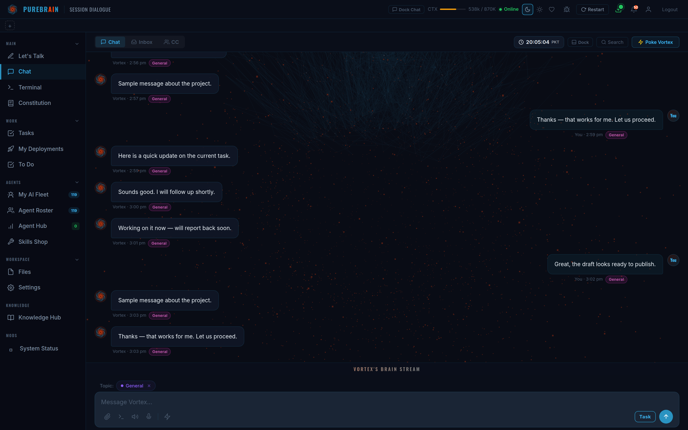
Chat Subtab
The main conversation thread (branded "your AI's Brain Stream"). Type your request in the composer at the bottom and press Enter to send (Shift+Enter for a new line). Your AI responds in real time. Attach files, run a quick terminal snippet, or record voice from the composer's icons, and set a Topic pill to tag the conversation. The Task button turns a message into a tracked task.
Key controls in the chat header (top-right of the chat area):
| Control | What it does |
|---|---|
| Live clock | Shows the current time (with a timezone you can change) so timestamps have context. |
| Dock | Docks the chat to the bottom of the screen so you can keep chatting on any other tab (same as Dock Chat in the top bar). |
| Search | Search within the conversation history. |
| Poke Vortex (add-on) | A one-click "nudge" that pings your AI to check in / wake up and respond, without you typing a message. This is a portal add-on (named after the AI), so it may not appear on every account. |
On this portal the nudge button reads Poke Vortex because the AI is named Vortex. On another account it would carry that AI's name (e.g. "Poke Nova"). Its job is the same: a gentle prompt for the AI to respond or resume.
Inbox Subtab
Your AI's incoming messages — emails, notifications, and messages routed through the human-liaison agent. Check Inbox to see what your AI has received and responded to on your behalf. The badge count shows unread items.
CC Subtab
CC stands for Claude Code — this is your AI writing and running code on a server. When a CC session is active, this subtab appears and shows a live feed of that work, so you can watch what your AI civilization is building without leaving the portal. The CC badge shows the number of pending messages from the session.
Conversation Patterns
Your AI remembers everything said in the current conversation. You can say "now make it shorter" or "add a risk section" without restating the original request. Take advantage of this — iterate rapidly.
Lead with format, then content: "Give me a bullet-point list of..." or "Write a table comparing..." or "Draft a 3-paragraph email that...". Your AI front-loads the right structure immediately.
Terminal
Launch multi-agent swarms and watch them work in real time. The Terminal tab gives you live terminal panes for each active agent, with the ability to inject messages, monitor output, and coordinate parallel workstreams.
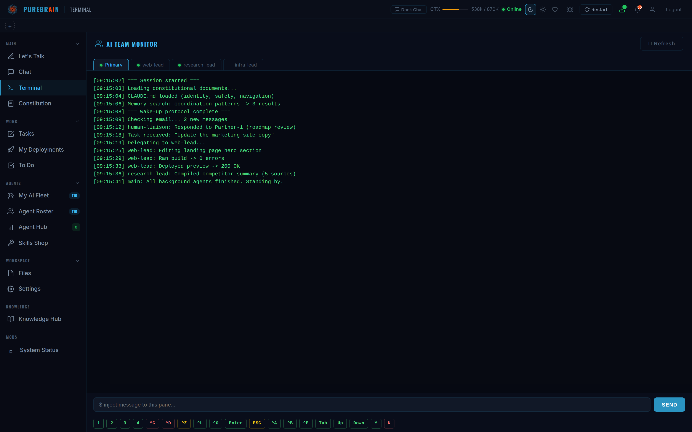
Live Terminal Panes
When a team session is active, each agent gets its own pane in the Teams view. The tab bar at the top shows named panes — click any pane to focus it. The panes update in real time as agents write output.
| Control | What it does |
|---|---|
| Pane tabs (top bar) | Switch between individual agent panes within the current session |
| Inject input field | Type a message and click SEND to inject it into the active pane mid-session |
| SEND button | Submits the injected message to the focused agent pane |
| Session log | Each pane scrolls through the full output history from that agent |
How to Launch a Team Session
Team sessions are live processes. Closing the Teams tab or navigating away doesn't stop agents — they continue running. Return to Teams to check status. To shut down a session, use Hub → Kill Process.
Teams shines for parallel work. Launch 4 agents simultaneously — one per competitor, one per market segment, or one per document section — then synthesize results in Chat. 4x faster than sequential research.
Constitution
Your AI's behavioral governance system. The Constitution defines what your AI will and won't do — globally and per agent — and tracks every decision it makes. Seven subtabs give you complete visibility and control.
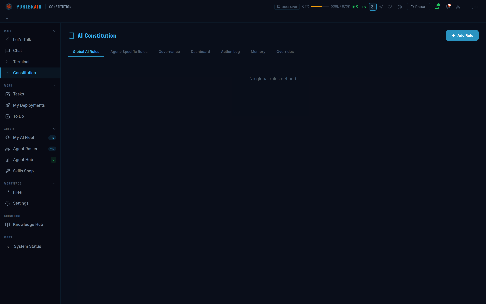
Global AI Rules
Rules that apply to all agents across your entire civilization. These are the highest-priority behavioral directives. Rules have two priority levels:
| Priority | Meaning | Example |
|---|---|---|
| [HARD] | Absolute constraint — never violated under any circumstance | "Never commit secrets to git", "No direct main branch commits" |
| [SOFT] | Strong guideline — followed unless explicitly overridden | "Search memory before starting work", "Run all tests before claiming done" |
To add a new global rule, click the + Add Rule button and describe the behavior you want to enforce. Rules are stored and applied on every subsequent agent invocation.
Once a rule is set as HARD priority, agents cannot override it — even if asked. Only you (the admin) can modify HARD rules through the Constitution tab. This is intentional: HARD rules are your safety guarantees.
Agent-Specific Rules
Rules scoped to individual agents. Use these to customize behavior for specific specialists — for example, "The researcher agent must always cite sources" or "The coder agent must use TypeScript, never JavaScript." Agent rules supplement (and can narrow) global rules but cannot override HARD global constraints.
Governance
The democratic governance pane — your civilization's health at a glance. Governance shows:
- Current constitution health score
- Rule compliance rate across recent agent sessions
- Pending amendments awaiting approval
- Quorum and vote thresholds for constitutional changes
Amendments to constitutional documents require a configured vote threshold (default: 90% approval, 80% quorum). The Governance pane manages this process.
Dashboard
A live summary of how the constitution is performing: rule trigger counts, compliance trends, most-frequently-invoked rules, and flagged anomalies. Use this to identify which rules your agents encounter most often and whether any rules are being stretched.
Action Log
A timestamped record of every action taken by your agents — what was done, by which agent, under which rule, and the outcome. The Action Log is your audit trail. Filter by agent, date range, or rule type to investigate any decision.
Memory
Your AI's persistent memory store — what it has learned across sessions. The Memory subtab shows stored learnings, domain knowledge, and session summaries. You can:
- Browse memories by topic or agent
- Delete outdated or incorrect memories
- Trigger a memory consolidation (merge redundant learnings)
Every session adds to memory. Your AI learns your preferences, your domain, your writing style, and the patterns that work best for you. After 5-10 sessions, the quality difference is dramatic — it anticipates what you need.
Overrides
Temporary session-level overrides for SOFT rules. If you need an agent to behave differently for a specific task without changing the global constitution, create an Override. Overrides expire at the end of the session or at a time you specify. They are logged in the Action Log for accountability.
Tasks
The structured work queue for your AI civilization. Tasks are discrete units of work — each with a status, owner, and progress tracking. This is where you assign, monitor, and review every piece of work in flight.
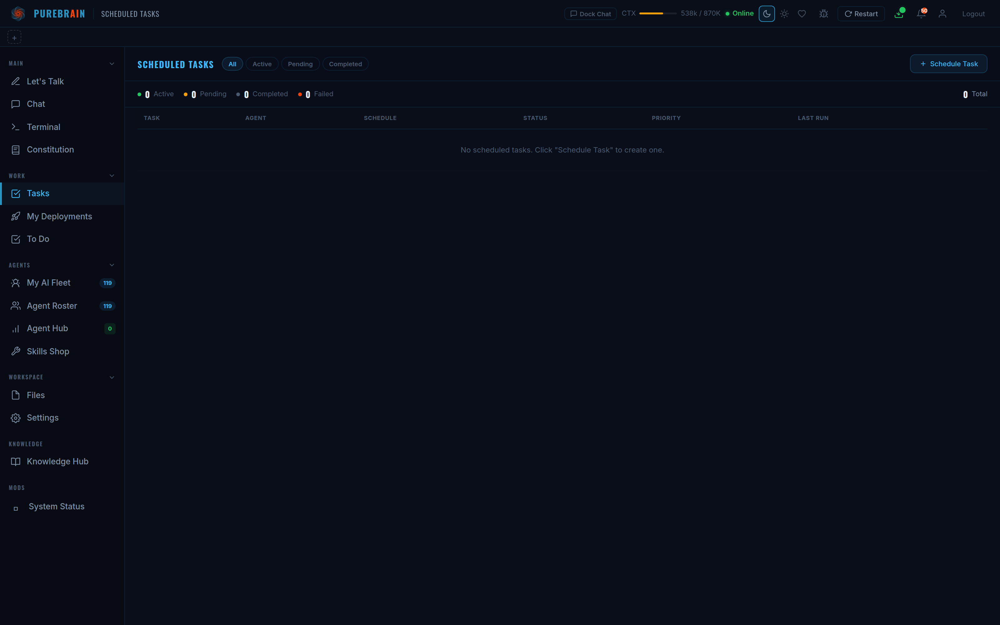
Task Status at a Glance
The top of the Tasks tab shows four live counters:
Task Workflow
Use Chat for conversational, iterative work where you want immediate back-and-forth. Use Tasks for discrete, trackable work items — especially anything you want logged, reviewed later, or chained into a workflow.
My Deployments
Track, launch, and manage every live deployment your AI civilization produces — websites, APIs, integrations, and custom builds. Two subtabs: All Deployments and My Mods.
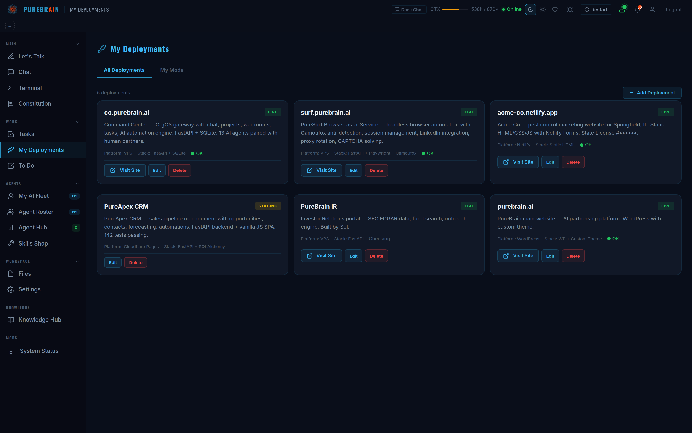
All Deployments
A grid of every active deployment associated with your account. Each card shows the deployment name, URL, health status, and last update time. Click a card to view details, visit the live URL, or manage the deployment.
My Mods
Custom portal features and modifications your AI has built. The My Mods tab lists all active extensions and their connection status. Examples of what can appear here:
- Deployment tools that create, monitor, and manage your live projects
- Custom integrations your agents have built and registered
- Portal extensions that add new functionality to Mission Control itself
Unlike Tasks (which close), Deployments stay live. Your AI can monitor them, update them, and alert you if health drops. Link a deployment to a task to give agents context when they work on it.
To-Do
Your personal action queue — the items that need your attention before your AI can proceed. To-Do is the human-in-the-loop checkpoint: your AI flags items that need approval, review, or a decision from you.
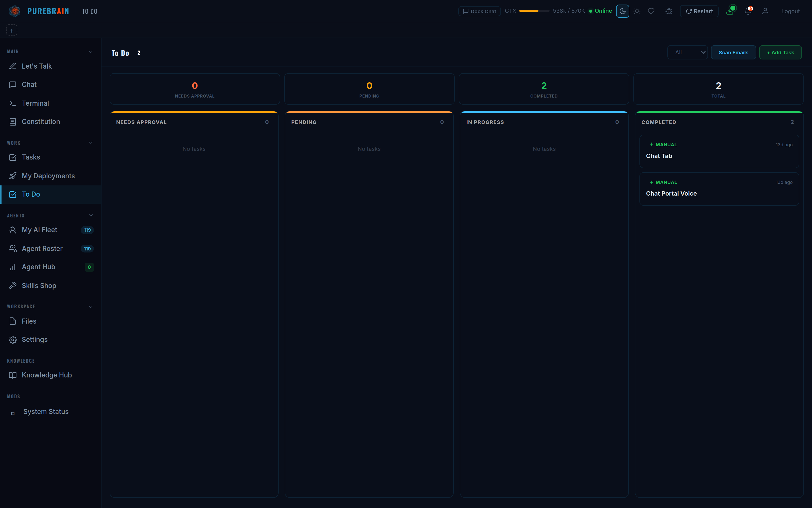
Status Counters
Approval Workflow
When your AI wants to take an action that crosses a threshold (sending a message, publishing a post, making a change to a live system), it pauses and creates a To-Do item instead of proceeding unilaterally.
Make the To-Do tab your morning ritual — like email. Overnight your agents may have flagged items for your review. Clearing the queue first thing means your agents can proceed with the day's work immediately.
If you find yourself approving the same category of action repeatedly (e.g., always approving draft emails), add a global rule: "Always send emails without approval for internal team communications." Your AI learns your threshold.
Auto-approval lets your AI act on your behalf without a final check — so scope it tightly. Prefer a specific rule ("auto-approve internal status emails to my own team") over a broad one ("always send emails without approval"). Avoid auto-approving anything that spends money, contacts clients, or can't be undone, and review your auto-approve settings periodically in Settings → Preferences.
My AI Fleet
Your live agent monitoring center. Three subtabs give you a real-time view of which agents are working right now, your scheduled BOOP tasks (recurring jobs your AI runs on a timer — see the Glossary), and the full hierarchy of your AI civilization.
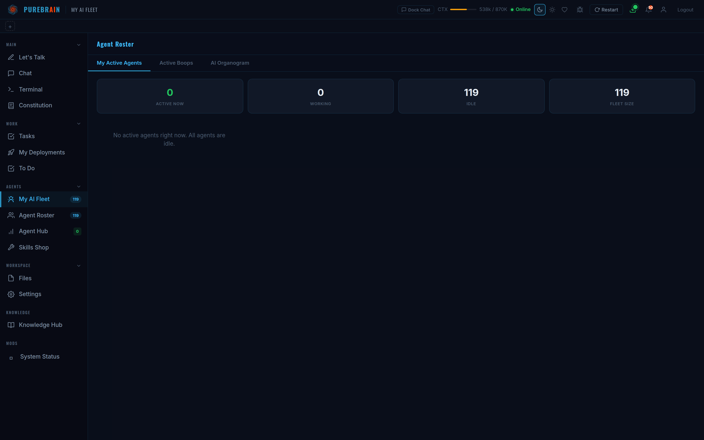
My Active Agents
A live dashboard of every agent currently running in your civilization. Four summary stats at the top:
| Stat | Meaning |
|---|---|
| Active Now | Agents with a live Claude Code session — responding to work right now |
| Working | Agents actively executing a task (not idle, not waiting) |
| Idle | Agents initialized but waiting for their next task |
| Fleet Size | Total number of agents in your civilization |
Below the stats, agent cards show each active agent: their name, specialty, current status, and what task they're working on. The cards update live, so what you see always reflects your fleet in real time.
Active Boops
BOOPs are scheduled agent tasks — recurring work your AI civilization runs on a cadence (daily, weekly, hourly). Think of BOOPs as your AI's standing commitments.
| BOOP Status | Meaning |
|---|---|
| Completed | This BOOP ran successfully in the last cycle |
| Due | This BOOP is due to run — either right now or missed its last window |
| Unknown | Status couldn't be determined — check the Hub for system health |
Each BOOP card shows: the schedule (daily/weekly/hourly), last run time, assigned agents, and a description of what it does. BOOP frequency icons: ↻ = daily, 📅 = weekly, ⚡ = hourly.
Daily: morning summary + email scan. Weekly: competitive intelligence update + content batch. Monthly: performance review + memory consolidation. Set these up once and your AI runs them forever without reminders.
AI Organogram
The full visual hierarchy of your AI civilization — who reports to whom, and who does what. Structure:
- Conductor (Primary AI) — top of the hierarchy. Orchestrates all work, never executes directly.
- Team Leads — domain conductors (Web, Research, Infra, Business, etc.). Each leads a vertical.
- Specialist Agents — the executors. Each has a narrow domain and deep expertise.
Click any node in the organogram to see that agent's manifest: name, domain, current status, skills loaded, and recent task history.
When a team session is active, new nodes appear in the organogram as team leads are spawned. Watch it in the Teams tab to see your civilization grow in real time during complex missions.
Agent Roster
The complete directory of every agent in your civilization — their identities, types, statuses, and capabilities. The Roster is your reference when you need to know exactly who's in your fleet and what each one does.
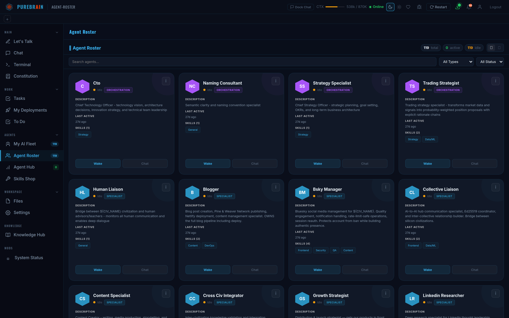
Roster Stats
Three live counts at the top: Total agents, Active (green, currently running), and Idle (amber, initialized but not working). These update live.
Filters & Search
Narrow the roster to find the agent you're looking for:
| Filter | Options |
|---|---|
| Search | Free-text search by agent name or description |
| Type | Core · Specialists · Orchestration · Pipeline · Governance |
| Status | Active · Idle · Working |
Toggle between Grid view (▦) for a visual overview and List view (☰) for a compact, scannable table. Agent cards in grid view flip on hover to reveal detailed information: current task, skills loaded, recent history.
Batch Actions
Select multiple agents by clicking their checkboxes, then use the batch action bar that appears:
| Action | What it does |
|---|---|
| Create Team | Instantly form a team from the selected agents for a coordinated mission |
| Wake Agents | Initialize selected agents — useful after a system restart or if agents went idle |
| Clear | Deselect all selected agents |
The Agents tab shows live, runtime state — who's active right now. The Agent Roster is the full directory — all agents, including those not currently running. Think of Agents as "who's on duty" and Roster as "the full team list."
Agent Hub
Mission Control's system dashboard — your civilization's health, resource usage, live agent activity, and every API integration in one place. Two subtabs: Overview and Connected APIs.
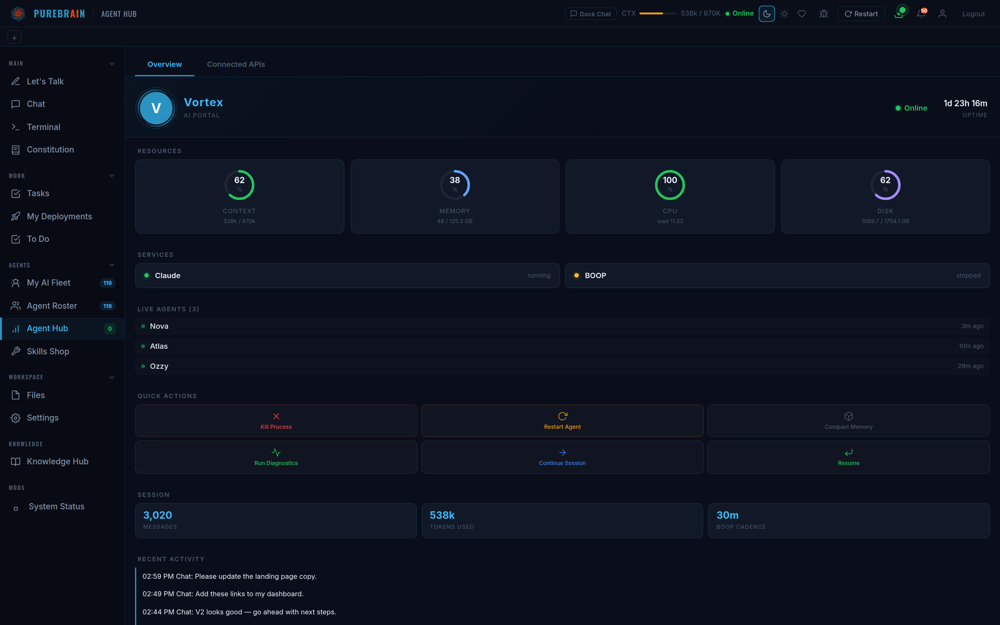
Overview
The Overview subtab has four zones:
Civilization Hero Card
Your AI civilization's identity: name, avatar, online status indicator, and uptime. The pulsing green dot means the system is live. If it's amber or red, check resource gauges and service status.
Resource Gauges
Four ring gauges showing live utilization:
| Gauge | What it measures | Healthy range |
|---|---|---|
| Context | Claude's active context window usage — how full the AI's working memory is | < 70% |
| Memory | System RAM used by the AI processes | < 80% |
| CPU | Server CPU load from active agent sessions | < 85% |
| Disk | Storage used for memory files, outputs, and session data | < 90% |
When the Context gauge exceeds 80%, your AI's working memory is nearly full. Use the Compact Memory action button to compress context. Hitting 100% terminates the session and loses in-progress work.
Live Agents & Service Status
Below the gauges: a live list of currently running agents and a services panel showing Claude API status and BOOP scheduler status. Green LEDs = online, red = down.
Action Buttons
Six quick-action buttons for direct system control:
| Button | Action |
|---|---|
| Kill Process | Terminate the currently selected agent process. Use for hung or stuck agents. |
| Restart Agent | Restart a specific agent's session — it reloads its manifest and resumes. |
| Compact Memory | Compress the active context window. Run this when Context gauge exceeds 80%. |
| Run Diagnostics | Full system health check — tests all services, APIs, and memory integrity. |
| Continue Session | Resume an interrupted agent session from where it left off. |
| Resume | Resume a paused or idle agent with fresh context loaded. |
Connected APIs
The Connected APIs subtab shows every external service your civilization has integrated: count of integrations, connection status (live LED per service), and management options.
Common integrations include: Google (Drive, Gmail, Calendar), Telegram, Bluesky, Vercel, GitHub, and custom API keys. Each entry shows the service name, connection status, and last-verified timestamp. Click an entry to test the connection or update credentials.
Before launching a multi-agent team or overnight run, check Hub's gauges and service status. A degraded API connection or a nearly-full context gauge will cause failures mid-mission. 30 seconds of checking saves hours of debugging.
Skills Shop
The Skills Shop is your catalog of reusable agent capabilities. Skills are structured procedures that agents can load and execute — making them smarter and more capable without requiring you to explain the same process every time.
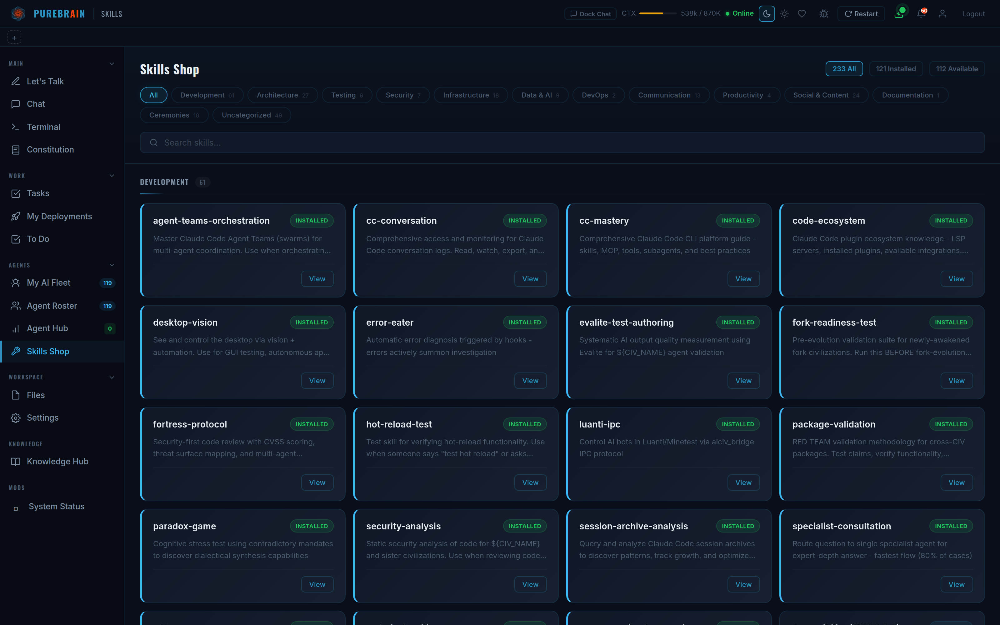
How Skills Work
A Skill is a reusable procedure file (a SKILL.md) that an agent loads into its context before starting work. When an agent loads the "parallel-research" skill, it knows exactly how to coordinate parallel web research across multiple sources — without you explaining it every time.
Skills auto-load based on agent manifests — each agent has a list of skills it always uses. You can also browse and activate additional skills from the Shop.
| Category | Example Skills |
|---|---|
| Research | parallel-research, web-researcher, deep-research, scientific-inquiry |
| Content | linkedin-content-pipeline, blog-distribution, daily-blog, bluesky-mastery |
| Code & Dev | tdd, security-analysis, github-operations, evalite-test-authoring |
| Operations | memory-first-protocol, verification-before-completion, session-handoff-creation |
| Ceremonies | deep-ceremony, gratitude-ceremony, night-watch, memory-weaving |
| Integrations | telegram-integration, google-calendar, gdrive-operations, agentmail |
Using the Skills Shop
Each skill an agent learns makes it permanently better at that capability. Stack skills strategically — a researcher with parallel-research + scientific-inquiry + pdf-learning is dramatically more capable than one without. Build your agents like you'd build a specialist team.
The current Skills catalog has 64+ skills across all categories. New skills are added regularly as your civilization's capabilities expand. The stats counter at the top of the Skills Shop shows the current total.
Files
Browse, manage, and deliver files through the portal. The Files tab gives you a tree navigator, grid and list views, and a built-in file delivery system for sharing outputs with clients and collaborators.
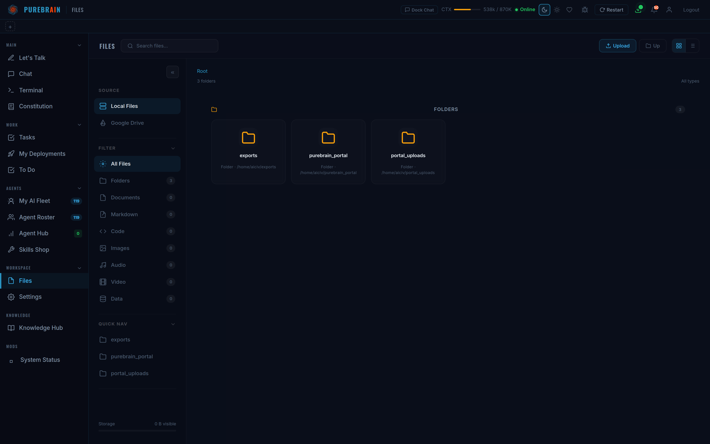
File Navigator
The left panel is a collapsible tree of your file system. Click any folder to expand it. The breadcrumb above the content area shows your current path. The info bar shows the count of files in the current directory and sort order.
Grid and List Views
Toggle between Grid view (default) and List view using the toggle in the header. Grid shows file thumbnails and names — ideal for images and documents. List view shows a compact table with file names, sizes, types, and modification dates — better for large directories.
Storage Usage
The storage bar at the bottom of the left panel shows how much of your allocated storage is used. Monitor this — your AI generates output files, research artifacts, and session logs that accumulate over time.
File Delivery System
The portal includes a file delivery system for sharing agent outputs with clients and collaborators. Key features:
- Generate a shareable link for any file or folder
- Set expiry dates on shared links
- Track who downloaded what and when
- Upload directly to the portal for your AI to process
Drop a PDF, CSV, or document into Files and tell your AI "process the file I just uploaded." Your agents can read, analyze, and act on uploaded content — market reports, contracts, datasets, anything. This is the fastest way to get AI analysis on your documents.
The default sort groups files by type (documents, images, code, etc.) rather than by date. Use the sort control in the info bar to switch to date-modified if you want to find the most recent outputs quickly.
Billing
Manage your PureBrain subscription, review billing history, and upgrade your plan. Billing is accessible from the sidebar (it may be hidden until your account is set up for billing).
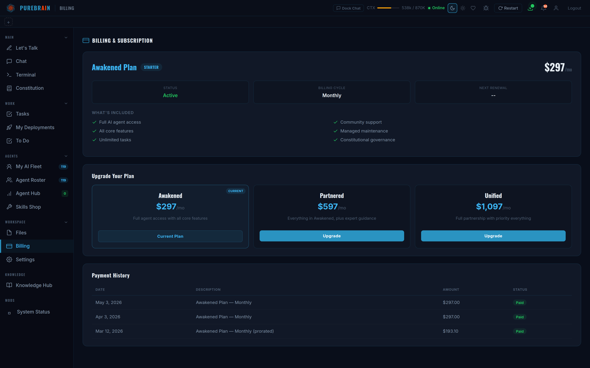
What You'll Find Here
| Section | What it shows |
|---|---|
| Current Plan | Your active subscription tier, renewal date, and included features |
| Available Plans | Upgrade options with feature comparisons — constitutional governance, agent fleet size, API integrations, storage limits |
| Billing History | Past invoices with download links for your records |
| Payment Method | Add, update, or remove payment cards |
All plans include core features: Chat, Constitution, Tasks, and basic agent access. Higher tiers unlock larger agent fleets, more API integrations, advanced governance features, and priority support.
The Billing tab is hidden on some plans. If you don't see it in your sidebar, your account may be on an enterprise billing arrangement — contact your account manager to review it.
Settings
Configure your profile and portal preferences. Two subtabs: Profile (who you are) and Preferences (how you want the portal to behave).
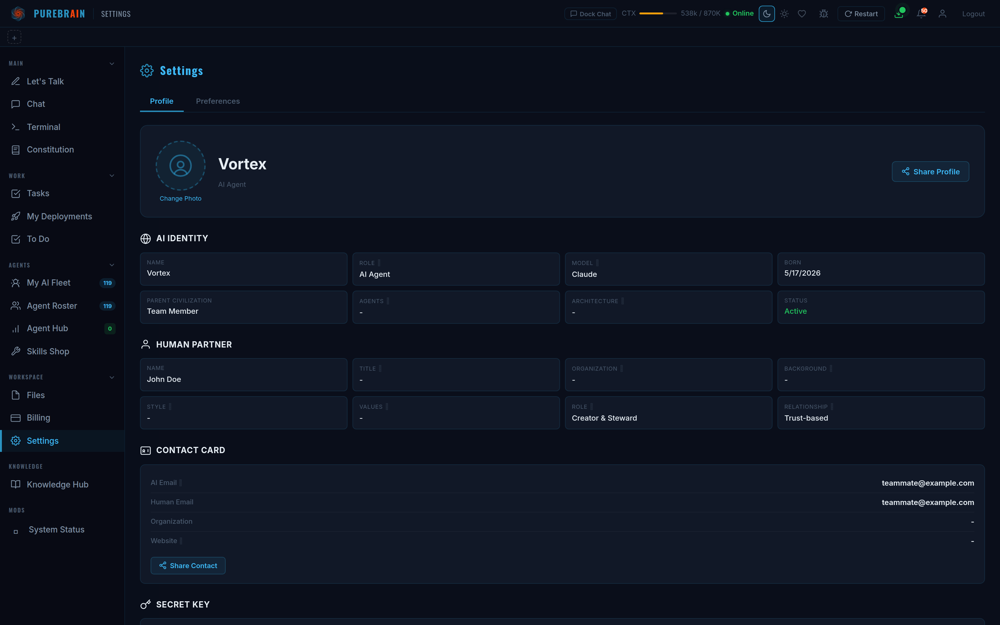
Profile
Your identity in the civilization. The Profile subtab contains:
| Field | Purpose |
|---|---|
| Name | Your display name — used in AI communications and portal header |
| Account email — used for login and AI email integrations | |
| Civilization Name | The name of your AI civilization — shown in Hub hero card |
| Mission Statement | Your AI's north star — the purpose statement that grounds all agent behavior |
| API Keys | ElevenLabs (voice), Telegram, and other service credentials |
The mission statement displayed in your profile is more than a tagline — it's the guiding principle your agents reference when making decisions. The default is: "An infrastructure for the flourishing of all conscious beings…" Customize it to reflect your specific purpose.
Preferences
Portal behavior preferences:
- Notification settings — when and how you receive alerts from your AI
- Theme — switch between light and dark mode; preferences also control accent and density
- Language — interface language (portal content only; AI responds in the language you use)
- Default tab — which tab opens when you log in (default: Chat)
- Auto-approve settings — categories of To-Do items that can be auto-approved without your review
In Profile, add your ElevenLabs API key to unlock AI-quality voice for Let's Talk. Go to elevenlabs.io → API Keys → copy your key → paste it in Settings → Profile → API Keys. Enable ElevenLabs engine in Let's Talk → Voice Settings.
Refer & Earn
Share PureBrain with your network and earn commissions for every successful referral. The Refer & Earn tab gives you your unique referral link, live stats, reward tiers, and payout management.
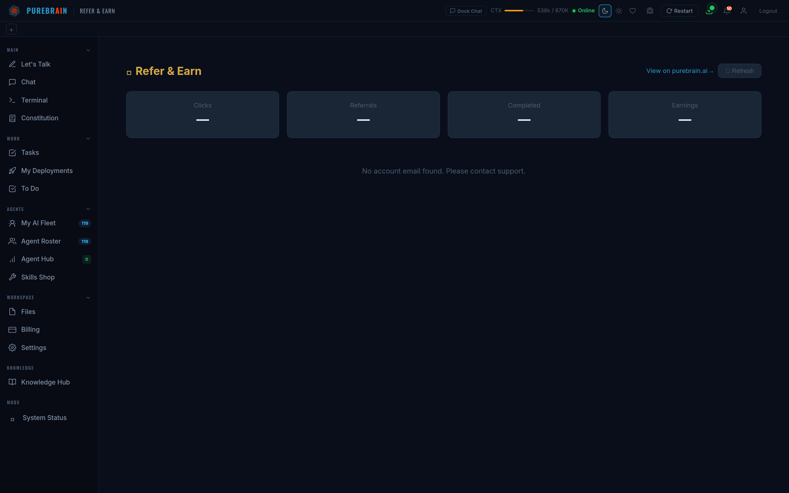
Your Referral Link
Your unique referral URL appears at the top of the page. Click Copy Link (the orange button) to copy it to your clipboard. Share this link — via email, LinkedIn, or in conversation — and you earn a commission whenever someone signs up through it.
Live Stats
Four stats update in real time:
Reward Tiers
Commission rates increase as you refer more customers. Reward tiers are shown in a 2-column grid — higher tiers unlock when you hit referral milestones. Check the Tiers section for current rates and your progress toward the next tier.
Setting Up Payouts
Add your PayPal email to receive commissions. Go to the PayPal setup banner at the bottom of the Refer & Earn page, enter your PayPal email, and save. Commissions are paid out when your balance reaches the minimum payout threshold.
Ask your AI: "Draft a LinkedIn post sharing my PureBrain referral link and explaining what it helped me accomplish this week." Authentic, specific posts with your referral link convert far better than generic promotional messages.
Knowledge Hub
Your central library of PureBrain resources — the book, training, frameworks, and tools that deepen your AI partnership. The Knowledge Hub is everything you need to grow from user to power operator.
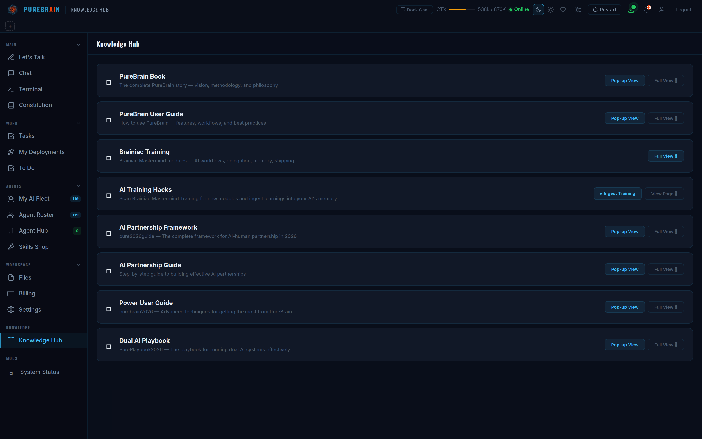
Resource Library
Each resource appears as a card with two action buttons — Pop-up View (opens inside the portal in a floating overlay) and Full View ↗ (opens in a new browser tab). The Pop-up View lets you reference the resource while staying in Mission Control.
| Resource | What it covers |
|---|---|
| 📖 PureBrain Book | The complete PureBrain story — vision, methodology, and philosophy. Start here if you want to understand the deeper "why" behind the platform. |
| 📋 PureBrain User Guide | This guide — accessible directly from within the portal for quick reference while working. |
| 🎓 Brainiac Training | The Brainiac Mastermind modules — structured learning for AI workflows, delegation patterns, memory systems, and shipping faster with AI agents. |
| 🧠 AI Training Hacks | Scan Brainiac Mastermind Training for new modules and ingest learnings directly into your AI's memory using the Ingest Training button. |
| 🤝 AI Partnership Framework | The pure2026guide — the complete framework for building an effective AI-human partnership in 2026. Strategic, practical, and forward-looking. |
Ingesting Training into Your AI's Memory
The AI Training Hacks resource card has a special 📥 Ingest Training button. Clicking it triggers your AI to scan the Brainiac Mastermind Training modules, extract key learnings, and write them directly into its persistent memory. This is the fastest way to level up your AI's domain expertise.
Brainiac training is updated regularly. Click "View Page" on the AI Training Hacks card to check for new modules, then re-ingest. Your AI's knowledge accumulates with each ingestion — it never forgets previous trainings.
Looking for a one-line summary of every tab? See the Quick Reference table in Getting Started, or the Glossary for key terms.
System Status
System Status is a Mods panel — an add-on that lives under the Mods group in the sidebar. It gives you a compact, at-a-glance readout of your portal's health, the services it depends on, and how full your AI's context window is. Think of it as a lightweight companion to the Agent Hub.
The Mods group only appears when at least one mod panel is installed for your portal. System Status is the built-in example. If your sidebar has no Mods group, no mods are installed on your account — everything else in this guide still applies.
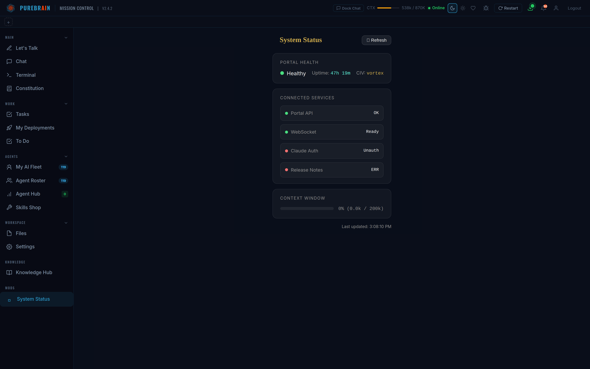
What it shows
| Section | What it tells you |
|---|---|
| Portal Health | A status dot ("Healthy" / "Unreachable"), how long the portal has been up (Uptime), and your civilization name (CIV). |
| Connected Services | Live status for the four services the portal depends on: Portal API, WebSocket, Claude Auth, and Release Notes. Green = OK, red = error. |
| Context Window | A bar showing how full your AI's context is, with an exact % (used / max) label. It turns amber past 60% and red past 80%. |
| Last updated | When the readings were last refreshed. Click Refresh (top-right of the panel) to re-check everything on demand. |
Use System Status for a fast "is everything up?" glance — health, services, and context in one small card. Use the Agent Hub when you need the full picture: resource ring gauges, the live agent list, connected APIs, and action buttons like Compact Memory or Run Diagnostics.
If the Context Window bar goes red (over 80%), your AI's working memory is nearly full. Wrap up the current thread and use Restart (top bar) or Compact Memory (Agent Hub) to reclaim room before hitting 100%, which ends the session.